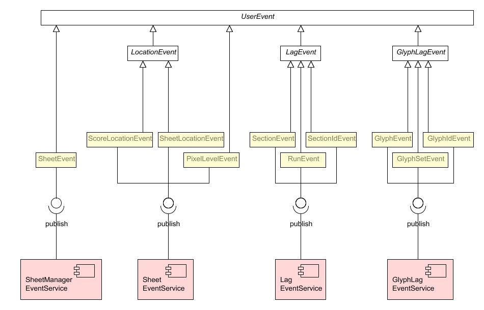

This package define key selections for user interactions, such as current sheet, current pixel location, current glyph, etc and update accordingly all registered observers, so that global consistency of user selections is automatically maintained.
